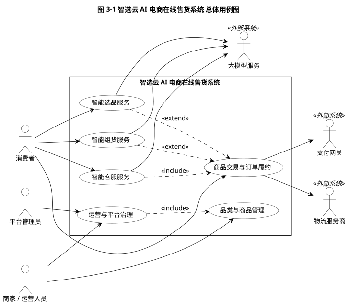
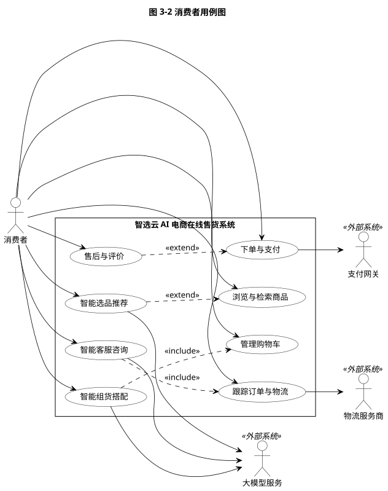
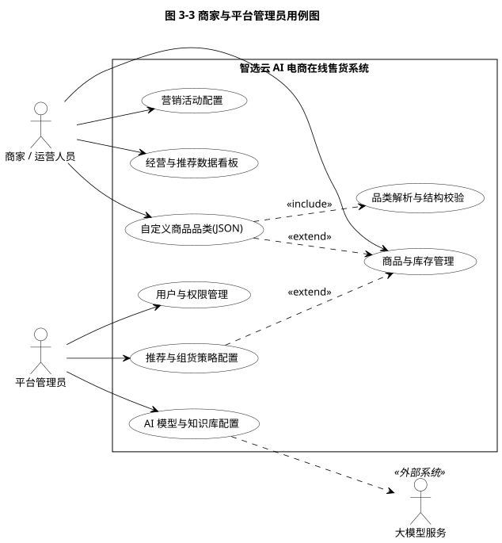
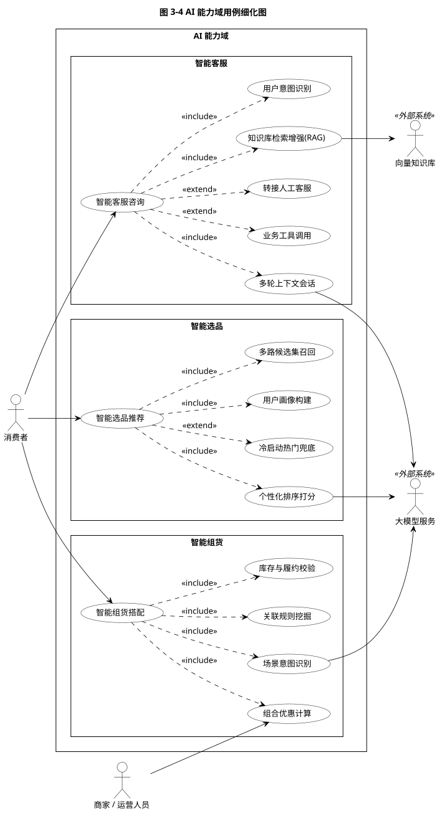
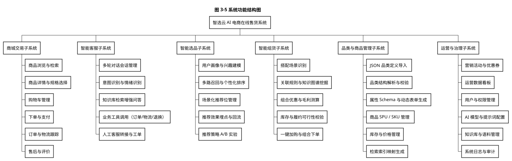
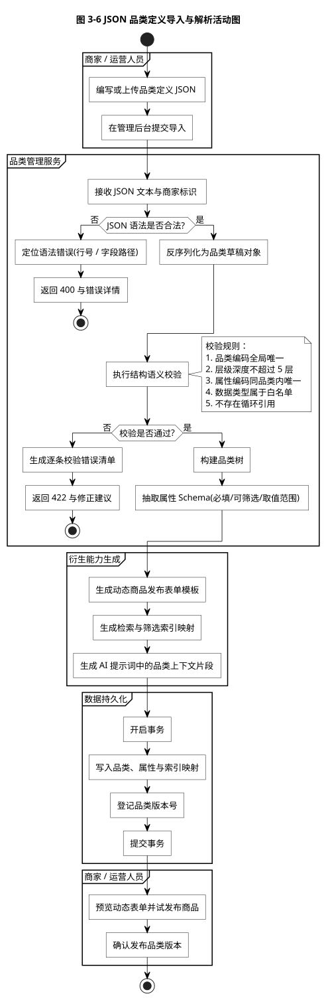
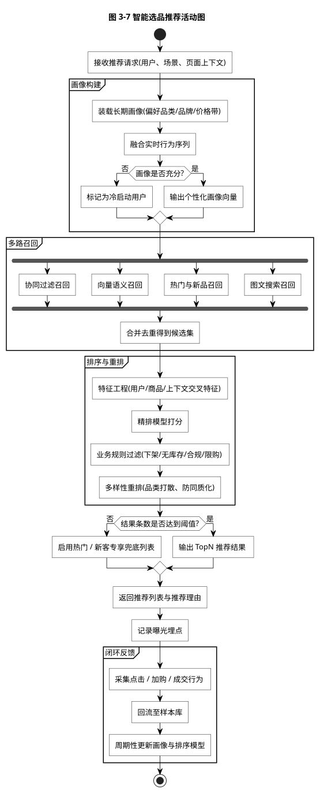
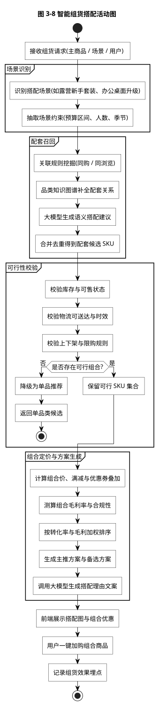
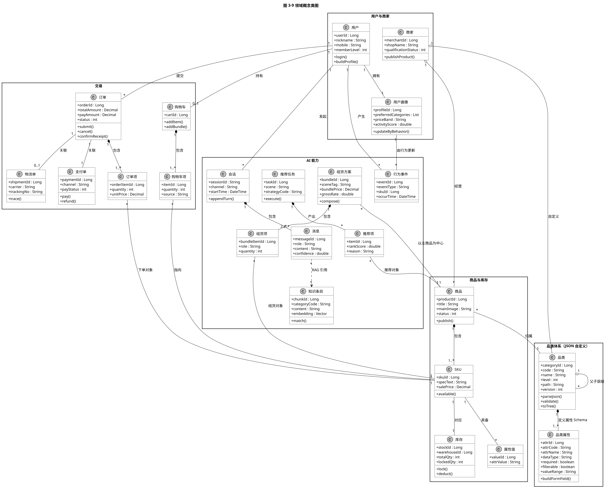

系统需求分析与设计文档 · 第 1 册
智选云 AI 电商在线售货系统
需求分析报告
AI-ECP (AI E-Commerce Platform) — Software Requirements Specification
| 文档编号 | AIECP-SRS-001 |
| 文档版本 | V1.0 |
| 系统代号 | AI-ECP |
| 建模语言 | UML 2.5（用例图、活动图、类图） |
| 配套文档 | 《智选云 AI 电商在线售货系统 系统设计报告》AIECP-SDD-001 |
| 编制日期 | 2026 年 9 月 |
1 引言
1.1 编写目的
本文档面向「智选云 AI 电商在线售货系统」（以下简称本系统）的立项评审、开发实现与验收测试，用于完整、无歧义地描述系统的业务目标、用户角色、功能需求、非功能需求与约束条件。文档以 UML 2.5 作为统一的需求分析建模语言，通过用例图界定系统边界与参与者，通过活动图刻画关键业务流程，通过领域概念类图沉淀业务概念与业务规则，从而为系统设计、编码、测试与交付提供可追溯的基线。
本文档的预期读者包括：项目发起人与评审专家、产品与业务人员、系统架构师与开发工程师、测试工程师、运维与运营人员。
1.2 项目背景
传统电商系统在商品数据建模上普遍采用「固定类目 + 硬编码属性」的方案：类目树与属性集在编码阶段即被固化，一旦商家希望新增一个经营品类，就需要发版、改库、改表单、改检索映射，交付周期以周计。对于经营品类快速更迭的商家（如季节品、潮流品类、垂直专业品类），这种刚性结构成为业务扩张的直接瓶颈。
与此同时，电商流量成本持续攀升，单纯依靠「人找货」的搜索模式难以提升转化与客单价。行业实践表明，在商品详情页与购物车环节嵌入智能组货（组合搭配推荐）、在首页与列表页嵌入智能选品（个性化推荐）、在全链路嵌入智能客服（知识问答与业务办理），能够显著改善转化率与用户满意度。
本系统正是针对上述两个痛点立项：一方面以 JSON 驱动的动态品类建模解决品类结构「由用户自定义、无需发版即可生效」的问题；另一方面以 AI 能力中台的形式统一沉淀智能客服、智能选品、智能组货三项能力，做到能力可复用、模型可替换、策略可配置。
1.3 术语与缩略语
| 术语 / 缩略语 | 说明 |
|---|---|
| AI-ECP | AI E-Commerce Platform，本系统的英文代号 |
| 品类（Category） | 商品的分类节点，构成本系统的品类树；由商家通过 JSON 自定义 |
| 品类属性（Category Attribute） | 挂在品类上的字段定义，用于描述该品类下商品的可描述特征；是动态表单与筛选条件的来源 |
| SPU / SKU | Standard Product Unit（标准商品单元）／Stock Keeping Unit（库存量单位）。SPU 描述「是什么商品」，SKU 描述「什么规格、多少钱、有多少库存」 |
| JSON 品类定义 | 商家提交的、用于声明品类树与属性 Schema 的 JSON 文本，是本系统品类结构的唯一事实来源 |
| 属性 Schema | 由品类属性集合推导出的结构化描述，用于生成动态表单、检索索引与 AI 提示词上下文 |
| RAG | Retrieval-Augmented Generation，检索增强生成。先检索知识片段，再交由大模型生成答复 |
| 召回 / 排序 / 重排 | 推荐链路的三个阶段：召回从全量商品中筛选候选集，排序对候选集精算打分，重排按业务规则与多样性调整顺序 |
| 组货（Bundle） | 以主商品为中心，组合若干配套 SKU 形成的搭配方案，对应「一键搭购」业务 |
| 冷启动 | 新用户或新商品缺乏行为数据的状态，此时推荐链路降级为热门或新品兜底策略 |
| DMZ | Demilitarized Zone，隔离区。用于部署对公网暴露的接入组件 |
1.4 参考资料
- OMG，《Unified Modeling Language (UML) Specification, Version 2.5.1》，2017
- ISO/IEC/IEEE 29148:2018，《Systems and software engineering — Life cycle processes — Requirements engineering》
- 《智选云 AI 电商在线售货系统 系统设计报告》（AIECP-SDD-001）
- 本系统 UML 图源文件集（
uml/src/*.puml）与渲染图集（uml/dist/*.svg|png）
2 系统概述
2.1 系统定位
本系统是一个面向中小型品牌商与垂直品类商家的在线售货平台，同时具备两个区别于通用电商系统的核心特征：
- 品类自定义：品类结构、属性 Schema、筛选维度全部由商家以 JSON 文本声明，系统在分钟级完成解析、校验、落库与衍生能力生成，无需开发介入与系统发版。
- AI 能力内建：智能客服、智能选品、智能组货三项能力以中台组件形式内建，共享大模型网关、向量检索、提示词管理与安全护栏，业务域通过标准接口按需编排。
2.2 建设目标
| 目标编号 | 目标 | 衡量口径 |
|---|---|---|
| G-01 | 品类结构可自定义 | 商家提交合法 JSON 后，5 分钟内完成品类树、属性 Schema、动态表单与检索索引映射的生成与发布 |
| G-02 | 品类导入可纠错 | 非法 JSON 必须返回可定位到「行号 + 字段路径」的错误信息，不得静默失败 |
| G-03 | 智能客服可自助解决高频问题 | 物流、退换、商品咨询三类高频问题自助解决率达到 70% 以上 |
| G-04 | 智能选品可提升转化 | 推荐位点击率相对人工运营位提升 20% 以上，并支持 A/B 实验归因 |
| G-05 | 智能组货可提升客单价 | 组货方案使客单价提升 10% 以上，组合毛利率不低于单品均值 |
| G-06 | 能力可复用、模型可替换 | 更换或新增底层大模型不影响业务代码，仅需调整网关路由配置 |
2.3 用户角色与特征
| 角色 | 角色类型 | 特征与主要诉求 |
|---|---|---|
| 消费者 | 人类角色 | 移动端为主、PC 端为辅；关注商品是否好找、价格是否透明、问题能否即时解答、能否一键买到成套商品 |
| 商家 / 运营人员 | 人类角色 | 关注品类能否自行定义、商品能否快速上架、推荐与组货策略能否自助配置、经营数据是否可看 |
| 平台管理员 | 人类角色 | 关注权限边界、模型与知识库的可控性、内容合规与审计追溯 |
| 支付网关 | 外部系统 | 提供支付下单、支付结果异步通知与退款能力 |
| 大模型服务 | 外部系统 | 提供大语言模型的对话生成与向量化能力，可私有化部署或调用云端 API |
| 物流服务商 | 外部系统 | 提供运单创建、轨迹查询与时效预估能力 |
2.4 运行环境与约束
| 类别 | 约束说明 |
|---|---|
| 客户端 | 消费者端以移动端 Web / H5 / 微信小程序为主，兼容 PC 浏览器；商家端与运营端为 PC 浏览器 Web 应用 |
| 服务端 | 后端服务以容器化方式部署于 Kubernetes 集群；AI 推理服务可私有化部署或调用云端 API |
| 数据存储 | 业务数据使用关系型数据库；品类与商品检索使用搜索引擎；推荐与知识检索使用向量数据库；会话与热点数据使用缓存 |
| 合规约束 | 用户个人信息采集遵循最小必要原则；AI 生成内容须经安全护栏过滤；组货推荐不得进行虚假比价与价格欺诈 |
| 技术约束 | 品类 JSON 结构的版本必须向后兼容；AI 能力的提示词与策略须支持热更新，不允许硬编码在业务代码中 |
2.5 设计假设与依赖
- 假设商家具备编写或由第三方工具生成 JSON 文本的基本能力；系统提供可视化辅助编辑与示例模板以降低门槛。
- 假设底层大模型服务具备稳定的推理能力与可接受的首字延迟；系统对模型不可用场景设计了降级路径。
- 依赖支付网关与物流开放平台的服务能力；这两类外部系统的异常不得导致订单主流程数据不一致。
3 需求分析
3.1 需求获取与分析方法
本系统的需求分析以 UML 2.5 为统一建模语言，采用「自顶向下分解、自底向上验证」的双向路径：
- 用例驱动：先从参与者与系统边界出发绘制用例图（图 3-1 至图 3-4），明确「谁、对系统做什么、得到什么结果」，形成功能需求的主干。
- 流程细化：对自定义品类导入、智能选品、智能组货三条关键链路绘制活动图（图 3-6 至图 3-8），把用例展开为活动、判断与并行分支，暴露业务规则与异常路径。
- 概念沉淀：以领域概念类图（图 3-9）沉淀核心业务概念及其关系，形成术语一致性与数据建模的共同基础。
- 功能确权：以功能结构图（图 3-5）给出功能分解树，并逐项登记功能需求清单与优先级。
3.2 系统用例分析
3.2.1 系统总体用例
系统总体用例图以模块级粒度给出系统边界与六大服务的对应关系。系统以「智选云 AI 电商在线售货系统」为边界，对外暴露消费者侧的交易与 AI 能力、供给侧的商品与品类管理、治理侧的运营与平台治理三组服务，并与支付网关、大模型服务、物流服务商三类外部系统协作。

图 3-1 智选云 AI 电商在线售货系统 总体用例图（源文件 03-01_uc_overall.puml）
| 用例编号 | 用例名称 | 主要参与者 | 用例说明 |
|---|---|---|---|
| UC-01 | 商品交易与订单履约 | 消费者、支付网关、物流服务商 | 覆盖商品浏览检索、购物车、下单支付、订单与物流跟踪的完整交易链路 |
| UC-02 | 智能客服服务 | 消费者、大模型服务 | 以多轮对话形式回答商品、订单、物流、退换等咨询，必要时转接人工 |
| UC-03 | 智能选品服务 | 消费者、大模型服务 | 基于用户画像与场景上下文生成个性化商品推荐列表 |
| UC-04 | 智能组货服务 | 消费者、大模型服务 | 以主商品为中心生成成套搭配方案与组合优惠 |
| UC-05 | 品类与商品管理 | 商家 / 运营人员 | 以 JSON 自定义品类结构，并在其约束下管理商品与库存 |
| UC-06 | 运营与平台治理 | 商家、平台管理员 | 营销活动、数据看板、权限管理、模型与知识库治理 |
3.2.2 消费者用例
消费者用例图细化买家视角的八项用例，并显式标注 AI 能力的嵌入位置：智能选品推荐以 <<extend>> 扩展「浏览与检索商品」，智能组货搭配以 <<include>> 复用到「管理购物车」，智能客服咨询以 <<include>> 复用到「跟踪订单与物流」。

图 3-2 消费者用例图（源文件 03-02_uc_consumer.puml）
3.2.3 商家与平台管理员用例
供给侧与治理侧用例图突出了本系统的差异化能力：「自定义商品品类(JSON)」以 <<include>> 关系包含「品类解析与结构校验」，并以 <<extend>> 方式扩展「商品与库存管理」——即标准商品管理是基线能力，JSON 自定义品类是在其之上按需启用的增强能力。

图 3-3 商家与平台管理员用例图（源文件 03-03_uc_merchant.puml）
3.2.4 AI 能力域用例细化
AI 能力域用例细化图将三项 AI 能力展开到可验证的粒度，明确每一项能力的构成用例及其与其他用例的 <<include>> / <<extend>> 关系。其中 <<extend>> 关系对应「按需触发的增强路径」：例如「转接人工客服」是智能客服咨询在置信度不足时的可选扩展路径，「冷启动热门兜底」是智能选品推荐在画像不足时的可选扩展路径。

图 3-4 AI 能力域用例细化图（源文件 03-04_uc_ai.puml）
3.3 功能需求
3.3.1 功能结构
系统功能结构图以工作分解结构（WBS）形式给出六大子系统的功能分解树，是功能需求清单的组织索引。

图 3-5 系统功能结构图（源文件 03-05_func_tree.puml）
3.3.2 功能需求清单
下表按子系统登记功能需求。优先级定义：P0 为系统上线必需，缺失则业务不可用；P1 为首个迭代必须具备；P2 为后续迭代增强。
| 编号 | 功能名称 | 优先级 | 功能描述 |
|---|---|---|---|
| FR-01 | 商品浏览与检索 | P0 | 支持按品类树逐级浏览、关键词检索、按品类属性筛选与排序；筛选维度由品类属性 Schema 中的 filterable 字段动态决定 |
| FR-02 | 商品详情与规格选择 | P0 | 展示 SPU 信息并按 SKU 展示规格、价格与库存；规格选择项由该品类的属性 Schema 动态渲染 |
| FR-03 | 购物车管理 | P0 | 支持单品加入、组合方案整单加入、数量修改、勾选结算与失效商品提示 |
| FR-04 | 下单与支付 | P0 | 支持地址选择、优惠计算、订单创建、库存锁定、支付发起与支付结果回调处理；回调须验签且幂等 |
| FR-05 | 订单与物流跟踪 | P0 | 支持订单列表与详情、状态流转展示、物流轨迹查询、确认收货 |
| FR-06 | 售后与评价 | P1 | 支持取消订单、申请退款退货、上传凭证、商品评价与追评 |
| FR-07 | JSON 品类定义导入 | P0 | 支持粘贴或上传 JSON 文本，支持示例模板下载与可视化辅助编辑 |
| FR-08 | 品类结构解析与校验 | P0 | 解析 JSON 为品类树，执行语法校验与结构语义校验，返回可定位的错误清单 |
| FR-09 | 属性 Schema 与动态表单生成 | P0 | 依据属性 Schema 自动生成商品发布/编辑表单，无需为新增品类开发页面 |
| FR-10 | 检索索引映射生成 | P0 | 依据 filterable / searchable 属性自动生成检索与筛选索引映射，并同步至检索引擎 |
| FR-11 | 商品 SPU / SKU 管理 | P0 | 支持商品发布、上下架、SKU 规格与价格维护、图文素材管理 |
| FR-12 | 库存管理 | P0 | 支持多仓库存、库存锁定与扣减、库存预警、库存流水记录 |
| FR-13 | 智能客服多轮对话 | P0 | 支持流式答复、多轮上下文记忆、会话超时与归档 |
| FR-14 | 意图识别与知识检索增强 | P0 | 识别用户意图并抽取槽位；知识咨询走向量检索增强生成，业务意图走工具调用 |
| FR-15 | 业务工具调用 | P1 | 客服可调用订单查询、物流查询、库存查询等受控业务工具，工具须声明出入参 Schema |
| FR-16 | 转接人工客服 | P1 | 置信度低于阈值或用户主动要求时，将会话摘要与上下文转交人工坐席 |
| FR-17 | 用户画像构建 | P1 | 基于长期偏好与实时行为序列构建画像，用于召回与排序 |
| FR-18 | 多路召回与个性化排序 | P0 | 支持协同过滤、向量语义、热门新品等多路召回，并统一精排打分 |
| FR-19 | 推荐业务规则过滤与重排 | P0 | 过滤下架、无库存、限购与不合规商品；执行品类打散等多样性重排 |
| FR-20 | 推荐埋点与策略实验 | P1 | 记录曝光、点击、加购、成交埋点；支持推荐策略 A/B 实验与效果归因 |
| FR-21 | 组货场景识别与配套召回 | P0 | 识别搭配场景，通过关联规则、知识图谱与大模型语义补全召回配套 SKU |
| FR-22 | 组货可行性校验与组合定价 | P0 | 校验库存、物流可达与限购；计算组合价、优惠叠加与组合毛利率 |
| FR-23 | 一键加购组合 | P0 | 支持将整套组货方案一次加入购物车，并在结算时保留组合标识用于归因 |
| FR-24 | 营销活动与优惠券 | P1 | 支持满减、折扣、优惠券、限时活动及其与组货组合价的叠加规则配置 |
| FR-25 | 运营数据看板 | P1 | 提供交易、流量、推荐与组货效果的多维度看板 |
| FR-26 | 用户与权限管理 | P0 | 支持角色、菜单、数据范围三级权限控制与操作审计 |
| FR-27 | AI 模型与知识库配置 | P1 | 支持模型路由、提示词模板版本管理、知识库文档导入与切片、检索参数配置 |
3.4 关键业务流程分析
3.4.1 自定义商品品类 JSON 的导入与解析
该流程是系统最具特色的业务链路。活动图显式刻画了两处判断分支（JSON 语法合法性、结构语义合法性）与两处异常出口，并把「衍生能力生成」抽象为独立泳道，体现「一次声明、多端生效」的设计意图。

图 3-6 JSON 品类定义导入与解析活动图（源文件 03-06_activity_json_import.puml）
3.4.2 智能选品推荐
智能选品活动图给出「画像构建 → 多路召回 → 排序与重排 → 兜底 → 闭环反馈」的完整决策链路，其中多路召回以并行分支（fork）表达，体现召回路径之间的独立性；闭环反馈环节把行为数据回流为样本与画像更新，形成推荐系统的自增强机制。

图 3-7 智能选品推荐活动图（源文件 03-07_activity_selection.puml）
3.4.3 智能组货搭配
智能组货活动图把「会推荐」升级为「能成交」：在配套召回之后强制加入可行性与组合定价校验，只有当组合在库存、履约、价格与毛利四个维度同时成立时才输出方案，否则降级为单品推荐。这一约束避免了大模型产生「看似合理但不可售」的搭配方案。

图 3-8 智能组货搭配活动图（源文件 03-08_activity_grouping.puml）
3.5 领域模型分析
领域概念类图从业务视角抽象出「用户与商家」「品类体系」「商品与库存」「交易」「AI 能力」五个概念域，共 22 个核心概念。其中「品类 — 品类属性」的强组合关系是动态品类建模的语义基础：品类属性不能脱离品类独立存在，其生命周期随品类版本一同演进。

图 3-9 领域概念类图（源文件 03-09_class_domain.puml）
3.5.1 核心业务规则
| 规则编号 | 适用对象 | 规则描述 |
|---|---|---|
| BR-01 | 品类 | 品类编码在商家范围内全局唯一；品类树的层级深度不超过 5 层 |
| BR-02 | 品类 | 仅叶子品类允许挂载商品；非叶子品类不得直接发布商品 |
| BR-03 | 品类属性 | 同一品类内属性编码唯一；子品类自动继承父品类属性，且可新增不可覆盖 |
| BR-04 | 品类属性 | 属性数据类型必须属于白名单：字符串、整数、小数、布尔、枚举、日期、多值枚举、富文本、图片 |
| BR-05 | 商品与 SKU | SKU 的售卖价格不得超过其市场价；同一 SPU 下 SKU 的规格组合不得重复 |
| BR-06 | 库存 | 库存扣减必须满足「可用量 = 总量 − 锁定量 ≥ 需求量」，且以行级锁保证并发安全 |
| BR-07 | 订单 | 订单状态流转必须符合订单状态机；已支付订单的取消必须先经退款流程 |
| BR-08 | 支付 | 支付回调必须验签且幂等；同一支付单重复回调只允许产生一次状态变更 |
| BR-09 | 智能选品 | 推荐结果中不得出现已下架、无库存或超出限购数量的商品 |
| BR-10 | 智能选品 | 推荐结果须满足多样性约束：同一叶子品类占比不超过结果条数的 50% |
| BR-11 | 智能组货 | 组货方案必须包含至少 2 个 SKU；组合中每个 SKU 均须可售且在可送达范围内 |
| BR-12 | 智能组货 | 组合毛利率不得低于该主商品的单品毛利率；否则该方案不予输出 |
| BR-13 | 智能客服 | 答复内容须经安全护栏过滤；涉及金额、时效承诺等敏感表述须以业务系统返回值而非模型生成为准 |
| BR-14 | 智能客服 | 会话上下文保留最近 10 轮对话；超出部分须压缩为摘要后参与提示词构建 |
3.6 自定义商品品类 JSON 规范
本节定义商家提交的品类定义 JSON 规范，是该能力的需求契约。
3.6.1 结构说明
品类定义 JSON 采用嵌套结构：顶层为 schemaVersion 与唯一根品类 category；每个品类节点包含编码、名称、排序、属性列表与子品类列表。属性在层级上可继承，子品类自动获得父品类属性。
3.6.2 完整示例
{
"schemaVersion": "1.0",
"category": {
"code": "HOME_APPLIANCE",
"name": "家用电器",
"sort": 10,
"attributes": [
{ "code": "brand", "name": "品牌", "dataType": "string",
"required": true, "filterable": true, "searchable": true },
{ "code": "energyLevel", "name": "能效等级", "dataType": "enum",
"options": ["一级", "二级", "三级"], "required": true, "filterable": true },
{ "code": "warrantyYears", "name": "整机保修年限", "dataType": "integer",
"unit": "年", "range": [1, 10], "required": false, "filterable": true }
],
"children": [
{
"code": "HOME_APPLIANCE_KITCHEN",
"name": "厨房电器",
"sort": 20,
"attributes": [
{ "code": "capacity", "name": "容量", "dataType": "decimal",
"unit": "L", "range": [0.5, 60], "required": false, "filterable": true }
],
"children": [
{
"code": "HOME_APPLIANCE_KITCHEN_RICE_COOKER",
"name": "电饭煲",
"sort": 21,
"attributes": [
{ "code": "innerPot", "name": "内胆材质", "dataType": "enum",
"options": ["铝合金", "不锈钢", "陶瓷", "铸铁"],
"required": true, "filterable": true },
{ "code": "keepWarmHours", "name": "保温时长", "dataType": "integer",
"unit": "小时", "range": [0, 48], "required": false, "filterable": true }
]
}
]
},
{
"code": "HOME_APPLIANCE_CLEANING",
"name": "清洁电器",
"sort": 30,
"attributes": [
{ "code": "suctionPower", "name": "吸力", "dataType": "integer",
"unit": "Pa", "range": [1000, 40000], "required": false, "filterable": true }
]
}
]
}
}
3.6.3 字段说明
| 字段 | 类型 | 必填 | 说明 |
|---|---|---|---|
| schemaVersion | 字符串 | 是 | 规范版本号，当前支持 1.0；解析器按版本选择兼容策略 |
| category.code | 字符串 | 是 | 品类编码，建议大写下划线风格；同一商家范围内唯一，解析后作为检索与权限的作用域键 |
| category.name | 字符串 | 是 | 品类显示名称，长度不超过 64 字符 |
| category.sort | 整数 | 否 | 同级排序值，升序排列，缺省为 0 |
| category.attributes[] | 数组 | 否 | 该品类的属性定义列表；缺省表示该品类不新增属性 |
| attributes[].code | 字符串 | 是 | 属性编码，同一品类内唯一；解析后作为动态表单字段名与索引字段名 |
| attributes[].name | 字符串 | 是 | 属性显示名称 |
| attributes[].dataType | 枚举 | 是 | 数据类型，取值 string / integer / decimal / boolean / enum / multiEnum / date / text / image |
| attributes[].required | 布尔 | 否 | 是否必填，缺省 false；为 true 时商品发布必须提供该属性 |
| attributes[].filterable | 布尔 | 否 | 是否作为检索筛选维度，缺省 false；为 true 时生成索引映射 |
| attributes[].searchable | 布尔 | 否 | 是否参与全文检索，缺省 false |
| attributes[].options | 数组 | 条件必填 | dataType 为 enum / multiEnum 时必填，枚举取值列表 |
| attributes[].unit | 字符串 | 否 | 数值型属性的单位，用于表单后缀与筛选区间展示 |
| attributes[].range | 数组 | 否 | 数值型属性的合法取值区间 [min, max]，用于校验与滑块筛选 |
| category.children[] | 数组 | 否 | 子品类列表，递归同构；缺省表示该节点为叶子品类，可挂载商品 |
3.6.4 校验规则
| 编号 | 校验项 | 校验规则与错误处理 |
|---|---|---|
| V-01 | JSON 语法 | 必须为合法 JSON；不合法时返回 HTTP 400，并给出错误行号与字符偏移 |
| V-02 | 规范版本 | schemaVersion 必须为受支持版本，否则返回 422 |
| V-03 | 编码唯一性 | 同一层级及整棵品类树中 code 不得重复，重复时指出冲突路径 |
| V-04 | 编码格式 | code 须匹配 ^[A-Z][A-Z0-9_]{1,63}$ |
| V-05 | 层级深度 | 品类树深度不超过 5 层 |
| V-06 | 属性编码唯一性 | 同一品类内属性编码唯一；与继承自父品类的属性编码冲突时视为覆盖意图并给出警告 |
| V-07 | 数据类型白名单 | dataType 必须属于白名单集合 |
| V-08 | 枚举完备性 | enum / multiEnum 必须提供非空 options |
| V-09 | 数值区间合法性 | range 须为两元素数组且 min <= max；仅对数值型属性生效 |
| V-10 | 循环引用 | 品类树不得存在循环引用；深度优先遍历时若访问到已在栈中的节点即判失败 |
| V-11 | 结构完整性 | category 必填且必须提供非空 code 与 name |
| V-12 | 容量约束 | 单次导入的品类节点总数不超过 2000，属性总数不超过 20000，JSON 文本不超过 2 MB |
3.7 非功能需求
| 编号 | 类别 | 需求项 | 指标与验收口径 |
|---|---|---|---|
| NFR-01 | 性能 | 商品列表接口响应时间 | 在 500 并发下 P95 ≤ 300 ms，P99 ≤ 800 ms |
| NFR-02 | 性能 | 智能推荐接口响应时间 | P95 ≤ 500 ms（不含埋点上报）；支持结果缓存与优雅降级 |
| NFR-03 | 性能 | 智能客服首字延迟 | 首字流式返回 P95 ≤ 1.5 s，完整答复 P95 ≤ 8 s |
| NFR-04 | 性能 | 品类 JSON 导入处理时间 | 1000 节点规模下 ≤ 10 s；校验与落库分离，落库在事务内完成 |
| NFR-05 | 并发 | 下单峰值承载 | 支持 2000 TPS 的订单创建峰值；库存扣减不出现超卖 |
| NFR-06 | 可用性 | 系统整体可用性 | 核心交易链路年度可用性不低于 99.9%；AI 能力不可用不影响交易链路 |
| NFR-07 | 可用性 | AI 能力降级 | 大模型服务异常时自动切换备用模型；备用模型亦不可用时降级为规则策略并给出用户可见提示 |
| NFR-08 | 安全 | 身份与权限 | 统一鉴权，支持细粒度到「数据行」的权限控制；敏感操作留痕可审计 |
| NFR-09 | 安全 | 支付安全 | 支付回调验签、金额二次校验、防重放；支付相关字段全链路加密传输 |
| NFR-10 | 安全 | AI 安全护栏 | 输入侧检测提示注入与越权意图，输出侧过滤违规与不当内容；工具调用须经白名单与参数校验 |
| NFR-11 | 安全 | 数据合规 | 个人信息采集遵循最小必要；日志中的手机号、地址等字段须脱敏 |
| NFR-12 | 可扩展性 | 品类结构可扩展 | 新增品类与属性不需要代码变更与发版；品类版本可回滚 |
| NFR-13 | 可扩展性 | 模型与策略可替换 | 大模型、向量模型、排序模型均可通过配置替换；提示词模板支持版本管理与灰度 |
| NFR-14 | 可维护性 | 可观测性 | 关键链路全链路追踪；AI 调用记录 token 消耗、时延与命中率；告警分级 |
| NFR-15 | 兼容性 | 移动端适配 | 消费者端在 360 px 及以上宽度下无横向滚动；主流移动浏览器与微信内置浏览器一致可用 |
| NFR-16 | 兼容性 | 品类规范向后兼容 | 新增属性字段不得破坏历史 JSON 的解析；解析器对未知字段采取忽略并告警的策略 |
3.8 需求优先级与验收标准
| 里程碑 | 范围 | 验收标准 |
|---|---|---|
| M1 基础交易 | FR-01 ~ FR-06、FR-11、FR-12、FR-26 | 可完成「浏览—加购—下单—支付—收货」完整闭环；库存不超卖 |
| M2 动态品类 | FR-07 ~ FR-10 | 提交一只含 3 层、4 个品类、12 个属性的 JSON，5 分钟内完成导入并可直接发布商品；非法 JSON 的错误定位准确 |
| M3 智能客服 | FR-13 ~ FR-16 | 物流、退换、商品咨询三类问题各 20 条测试用例，自助解决率 ≥ 70%；转人工链路完整 |
| M4 智能选品 | FR-17 ~ FR-20 | A/B 实验下推荐位点击率相对人工位提升 ≥ 20%；业务规则过滤零误放 |
| M5 智能组货 | FR-21 ~ FR-23 | 组合方案的可售率 100%（不存在不可购买的方案）；客单价提升 ≥ 10% |
| M6 运营治理 | FR-24、FR-25、FR-27 | 模型与提示词可配置切换；看板数据与实际交易数据一致 |
4 需求追踪矩阵
需求追踪矩阵建立「需求—用例—UML 图—设计章节」的双向可追溯关系，用于验证需求的完整覆盖与后续变更影响分析。
| 需求编号 | 对应用例 | UML 图 | 设计章节 |
|---|---|---|---|
| FR-01 ~ FR-06 | UC-01 商品交易与订单履约 | 图 3-1、3-2、4-7、4-10 | 4.2、4.3、4.5、4.6 |
| FR-07 ~ FR-10 | UC-05 品类与商品管理 | 图 3-3、3-6、4-9 | 4.3、4.5、4.6、4.7 |
| FR-11、FR-12 | UC-05 品类与商品管理 | 图 3-3、3-5 | 4.3、4.6 |
| FR-13 ~ FR-16 | UC-02 智能客服服务 | 图 3-4、4-11 | 4.3、4.4、4.5 |
| FR-17 ~ FR-20 | UC-03 智能选品服务 | 图 3-4、3-7、4-12 | 4.3、4.5 |
| FR-21 ~ FR-23 | UC-04 智能组货服务 | 图 3-4、3-8、4-13 | 4.3、4.5 |
| FR-24、FR-25 | UC-06 运营与平台治理 | 图 3-1、3-5 | 4.2、4.4 |
| FR-26、FR-27 | UC-06 运营与平台治理 | 图 3-3、3-5 | 4.3、4.4、4.7 |
5 结论与后续工作
本报告以 UML 2.5 为统一建模语言，完成了对「智选云 AI 电商在线售货系统」的需求分析工作：以 4 张用例图界定系统边界与参与者视角，以功能结构图与 27 项功能需求确立功能基线，以 3 张活动图细化关键业务流程，以 1 张领域概念类图沉淀 22 项业务概念与 14 条核心业务规则，并对最具特色的「JSON 自定义品类」能力给出了完整的需求契约（含结构示例、字段说明与 12 条校验规则）。
后续工作包括：
- 依据本报告开展详细设计，产出《系统设计报告》，将需求映射为包结构、类结构、组件契约、部署形态与数据模型。
- 建立需求变更控制机制：品类 JSON 规范的任何调整必须同步更新本文档的 3.6 节与校验规则表，并评估对历史数据的影响。
- 在迭代中逐步细化非功能需求的压测口径，把指标转化为可执行的性能测试用例。